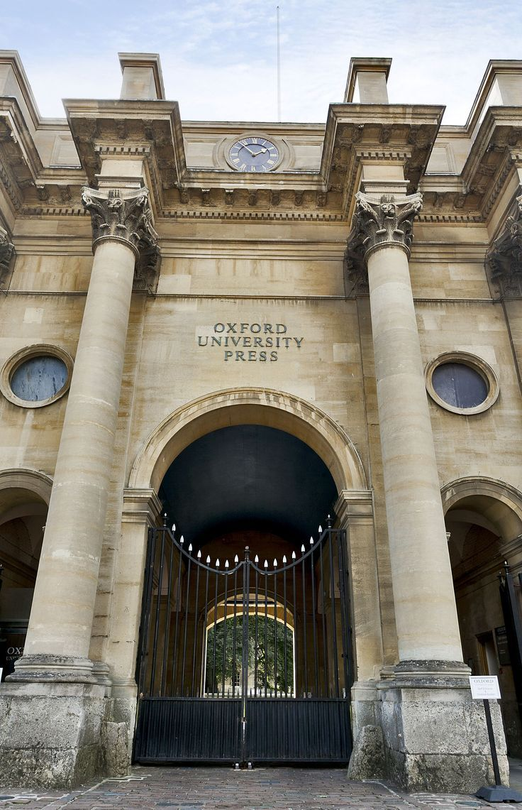

Um dia desses estava pensando em como seria o meu futuro,a minha vida e me questionei em como irei conquistar tudo oque eu desejo.
Um dos primeiros e mais importantes passos é obviamente terminar o Ensino Médio.

Após a minha formatura no Ensino Médio,irei passar em uma faculdade e cursar Literatura Brasileira ou Historia e Filosofia.
Depois de concluir faculdade,iria fazer mestrado ou virar professora de faculdade.
Me aposentar ou continuar trabalhando ate os 55 anos.